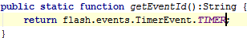

The Edit | Copy Reference action can be used to insert a reference to a field/method/class/file at the current position in the editor.
For example, go to the flash.events.TimerEvent SDK class, place the cursor at the TIMER field, and press &shortcut:CopyReference;:
Then return to your source file and press &shortcut:$Paste;:

You can also copy references in the GotoClass, GotoSymbol, and GotoFile dialogs.
Just press &shortcut:$Copy; on any element in the lookup list.